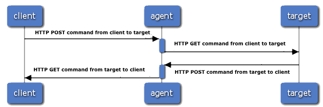
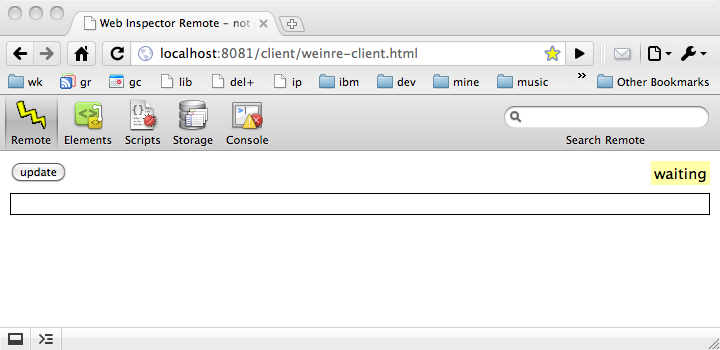
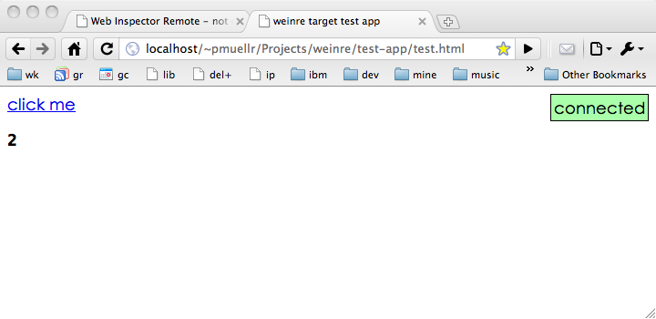

weinre has 'graduated' from the prototype described in this paper to an open source project currently available at Apache.
weinre - WEb INspector REmote
| Author: | Patrick Mueller - [mail] [blog] [web] | |
| History: | 2012-08-09 - added note above about current code at Apache | 2011-01-31 - added note above about code at Github (no longer there)
2010-04-27 - initial write-up |
what is weinre?
weinre (WEb INspector REmote) is an experiment I undertook in early 2010 to run the existing Web Inspector debug client as a plain old web page (the debug client written in HTML/CSS/JS) have it debug a web page running in a browser window running on a different machine. The complete running story would allow for some amount of debugging of a web page running on an iPhone device (or simulator) in Mobile Safari, and debug it on a desktop using Web Inspector running in a Safari or Chrome.
If you aren't already familiar with Web Inspector, there's a tutorial available for the Chrome-flavor of Web Inspector called Google Chrome Developer Tools.
A movie showing weinre in action is available on YouTube.
You can download the source and built runtimes for weinre, on the Web Inspector page of the WebKit wiki.
This report provides introductory information on the
implementation of weinre.
Spelunk through the code for more detail.
If you have additional questions about weinre, look for me
on #webkit-inspector on irc.freenode.net.
terms and basic structure
When using weinre, there are three different programs / web pages running simultaneously:
- the target - the web page being debugged
- the client - the Web Inspector code running as a web page
- the agent - an HTTP server which allows the target and client to communicate
The client and target are both running in a web browser, and as such act as HTTP clients, and have no way of acting as HTTP servers. The only HTTP server is the agent, which serves as a gateway between the target and client. The message flow between these three will be described later, but here's a sneak peek.
client -> agent: HTTP POST command from client to target activate agent agent -> target: HTTP GET command from client to target deactivate agent target -> agent: HTTP POST command from target to client activate agent agent -> client: HTTP GET command from target to client deactivate agent

Note: before running, please read the
section on security,
or rather, the lack of it.
After expanding the This file implements the agent/server. Directions to launch it are below.
This directory contains the bulk of the Web Inspector client
web page. Accessed via the This file is the JavaScript file that debug target
pages need to include to enabled debugging.
A test application to run as a target.
The To get started, pick a tcp/ip port to use to run the
server. I picked 8081 while I was working. Launch
the server with the command:
Replace 8081 with whatever port you want to use.
You should see something similar to the following when it starts:
Previously, I had mentioned running the Web Inspector client
through the agent server, as well as accessing the Note that the Web Inspector client code currently only runs
in Webkit-based browsers; eg, Safari, Chrome, and WebKit nightlies.
The following should appear in your browser:

Included with the archive is a small HTML file as
After making this change, load the The test application, when loaded will look like this:

Once both the debug
client and target are both running, they should connect to each
other and you can begin debugging. You can tell by looking at
the "status indicator" available in the test application and
in the debug client. In the test application, the green box
floating to the right is the indicator, as as this screen shot
indicates, the debug target is connected. If you switch to the
debug client, you should see the indicator in the Remote
panel has changed from a yellow "waiting" to a green "connected".
Now that everything's running, you can actually try some things.
In the debug client, switch to the Elements panel;
you should see the DOM elements for the sample page displayed.
You can currently interact in a read-only fashion with the
elements, styles, etc. In addition, the element which the
cursor is currently over will be highlighted in the page
being debugged (via hacking it's CSS background - not great).
For further things you can do, see the
supported and not supported function
section below.
In general, either of the test application and debug
client can be started first - it will wait till it's peer
has been started (as indicated by the status indicator).
You can also reload either page at any time. In particular,
reloading the debug client will allow you to see
an DOM changes that may have occurred since the page
was first loaded by the debugger.
not supported: any security
This is a bit of a problem, at least to proceed from experiment
stage to something useful. Currently there is no security used
anywhere. In addition, the agent server allows cross-origin
XHR access to itself from other origins, so it's even more vulnerable than
a typical web setup.
Until some security is implemented, only run the not supported: any
Most of the Web Inspector panels have been disabled since there
is no information to display on them. The scripts panel is
shown only because other code in Web Inspector requires it to
be shown.
supported: basic console actions
You can interact with the console as a REPL
as well see output from the target when it invokes supported: read-only introspection
The DOM is populated in a lazy fashion, but is not updated as it
changes. You can refresh the entire debug client to see the current
DOM.
supported: read-only introspection
The A To update the version of the Web Inspector client that
weinre uses, run the script
The innards of weinre
can be broken down into the following pieces, described below:
One of the primary goals of this experiment was to reuse existing
Web Inspector code. Web Inspector consists of the following bits:
Since the primary goal was to reuse Web Inspector goal, and
another goal is to run the code using user-land facilities,
the implicit goal was to reuse as much of the HTML, CSS, and JS
code, and replace the C++ code.
You might think that handling the separation of the client
and target running in different web pages would be a big problem.
But it wasn't, since the Web Inspector code is largely already
split along these lines to handle Google Chrome's multi-process
architecture - in Chrome's Developer Tools (their version of
Web Inspector), the page being debugged and the debug window
are running in separate processes.
As such, it turns out that "all you need to do" is plug in
some code to handle the multi-process message handling. The
bits and bytes of how this is done is described in the sections
below.
But the "plug in some code" bits can be described here.
Web Inspector (the version of code used for this experiment)
uses two "classes" to provide the multi-process message handling.
One runs in the debug client, and is called
The files where these classes are implemented in the source distribution are:
Some of the function in Web Inspector to introspect over your
web page being debugged is implemented in JavaScript. Most of
this code lives in the file
So the trick is to find that function which is implemented in C++,
and re-implement it in JavaScript.
Sometimes this is impossible - for instance, being able to
set or query JavaScript breakpoints, or be notified that a breakpoint
is hit. Other times, cheap imitations can be made to work -
for instance, highlighting nodes can be done by temporarily whacking
the background-color of a node.
Most of the code to do this is in the file
So we know there are messages being sent between the client and target,
which means somehow a message needs to be serialized and sent over
an interprocess communication channel from one to another. This
serialized format needs to be formalized.
For this version of weinre,
a JSON version of the
Google Chrome Developer Tools Protocol (CDTP)
was used as the message format. One of the reasons for using this
was that perhaps other Google Chrome Developer Tools, that use
the same protocol, could also make use of this work, or
weinre could maybe make use of other
Google Chrome Developer Tools. The format was somewhat
arbitrary, so using such a flimsy excuse seemed fine.
An example message sent from the client to the target, to get a list
of child nodes from an already identified node is:
Note that more headers are sent than are sent with CDTP.
The message above is actually wrapped in a another delicious layer of cake,
which looks like:
There's obviously some verbosity here.
As already mentioned, HTTP was used as the transport for
sending messages between the client and server. Since both
the debug client and debug target are running in standard
browser environments, neither can act as a server. Instead,
the debug agent acts as the HTTP server to transfer messages
between the client and target.
In order for this to work, both the client and target always
have an outstanding HTTP GET request to poll for new messages from
the other side. These GET requests are potentially long-lived,
though in practice we kept the maximum wait time in the "couple of seconds"
range. This made it easier to determine when one side of the
connection "went away".
So the actual message flow would be:
There are a number of subtleties to the "message passing via HTTP"
scheme. The python code in Before communicating with each other, a client and target must be
connected. Connection is handled by the agent, which waits for both
a client and target to send messages indicating they wish to connect,
at which point the two will be connected and messages can be passed
between them. The agent informs the client and target that peers have
connected, and disconnected, by messages where the Connecting involves While the client page always interacts with the agent, the target is designed
so that it can be used with a different page origin than the agent. This means
that you can load your page to be debugged from any URL, and have the
weinre interaction take place with the agent.
But this requires cross-origin running
files
weinre.zip archive,
you should see the following files/directory structure:
weinred.py
client/*
/client/ resource,
which redirects to the client/weinre-client.html
file.
weinre-target.js
test-app/*
weinred.py file implements
an HTTP server in Python, which is used for the
following:
weinre-target.js file used by
the debug target
starting the server
python weinred.py 8081
weinred.py: agent/server running at: http://[hostname]:8081/
weinred.py: for targets include: http://[hostname]:8081/weinre-target.js
weinred.py: run client at: http://[hostname]:8081/client/
weinred.py attempts to determine your host name, which
in this example is shown as "[hostname]".
weinre-target.js
file through the agent server. The console messages are telling you
exactly how to do that. Specifically, use the following URL
in your web browser to launch the Web Inspector debug client:
http://[hostname]:8081/client/
test-app/test.html, which is ready for
being debugged using weinre. You will need to change
the src attribute of the script element
pointing to weinre-target.js per the message in
weinred.py's console.
test-app/test.html
in your browser. Note, you will probably need to do this with an
http:// URL as opposed to file: URL;
in other words, load this file through a web server you have
installed on your local machine (since I know you have one).
test drive
supported and not supported function
security
weinred.py
server while you are playing with or testing the system. weinred.py
should obviously not be used in a production environment.
panels: scripts, resources, timeline, profile, etc
panel: console
console.log().
panel: elements
panel: storage
localStorage storage area is updated when it's
changed via the localStorage.setItem() or if
manually refreshed.
building
Makefile is provided to build and run
weinre. Use the following
command to get brief help on how to invoke the Makefile:
make help
third-party/WebKit/copy-inspector-source.py.
After updating the Web Inspector client code, you should
note the version of that code in the file
third-party/WebKit/WebKit-version.txt.
how the innards work
bridging to existing Web Inspector code
InspectorBackend. The other runs in the debug
target and is called InspectorFrontendHost.
In traditional Web Inspector, these classes are implemented
in C++ code and made available to the respective JavaScript
environments as plain old JavaScript objects. In the case
of weinre, these classes
are implemented in JavaScript and injected into the
JavaScript environment before the rest of Web Inspector
is loaded. Kind of a hacky "plug-in" model, but good
enough for rock-n-roll.
weinre-src/src/client/InspectorBackend-weinre.js
weinre-src/src/client/InspectorFrontendHost-weinre.js
implement debugging function in JavaScript instead of C++
weinre-src/third-party/WebKit/WebCore/inspector/front-end/InjectedScript.js.
Other function can't be implemented in user-land JavaScript,
or is unwieldy to implement in JavaScript, so it's implemented
in C++ instead.
weinre-src/src/weinre/target.js. Shield your eyes - some of this
code is painful.
message format for messages between client and target
{
"Headers": [
["Tool", "WebInspectorRemote"],
["Destination", "target"],
["Origin", "client"],
["OriginURL", "/channel/client/1272379028.611741-0"]
],
"Content": {
"command": "getChildNodes",
"args": [5, 3]
}
}
{
"msgTo": "target",
"text": "message delivered to: target",
"channelId": "1272379028.611741-1",
"channelMessage": <<CDTP message above>>,
"date": "2010-04-27 10:46:38.464747",
"id": 26
}
using HTTP to flow messages between client and target
weinre-src/weinred.py handles
most of this complexity.
Origin property
of the Header property has value of "agent",
and the Content property contains the literal object
{"event": "peerConnected"} or
{"event": "peerDisconnected"}.
POSTing a message to /channel/target
or (/channel/client), which will result in a URL being sent in the response
that should be
used to POST further messages and to receive messages via GET
XMLHttpRequest support!
Luckily, such a thing exists, called CORS.
For more information on CORS, see
W3 Cross-Origin Resource Sharing spec draft.
This implies you can only debug targets that support CORS. Otherwise, you will
have to arrange to run your application's server code and the agent code from
the same server (perhaps proxying).